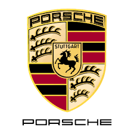

&l?php
echo "Non sono nella Home, ";
?&code
torna alla Home
La Porsche (pronuncia tedesca: ['pɔʁʃə]; in italiano comunemente /'pɔrʃ/) è una casa automobilistica tedesca che produce auto con sede presso il quartiere Zuffenhausen della città di Stoccarda (Baden-Württemberg).Il capitale sociale dal 2012 è interamente posseduto dalla Volkswagen (in precedenza vi era una partecipazione azionaria di minoranza).
La storia della Porsche inizia ufficialmente il 25 aprile del 1931 con la fondazione dello studio di progettazione e ingegneria Dr. Ing. h.c. F. Porsche GmbH a Stoccarda da parte del fondatore Ferdinand Porsche: è questo il vero nucleo originario dell'azienda Porsche, in cui ben presto inizierà a fornire il proprio importante contributo anche il figlio di Ferdinand, ovvero Ferdinand Anton Porsche (detto "Ferry").Il 17 gennaio del 1934, durante il periodo nazista, su richiesta di Adolf Hitler, Ferdinand Porsche redige un esposto concernente la progettazione e la costruzione di una vettura a destinazione popolare: nacque così la prima celebre Volkswagen ovvero l'auto del popolo (dal tedesco Volks = popolo (nel caso genitivo della parola) e Wagen = vettura). Intorno al 1938 pare che lo stesso Hitler fornisse specifiche richieste tecniche a Ferdinand Porsche per la realizzazione di un'automobile dalle prestazioni più elevate. Egli, insieme al figlio lavorò assiduamente per dare vita alla prima vera Porsche, che peraltro entrerà in produzione, tra mille difficoltà e vicissitudini legate all'esito delle vicende belliche, soltanto dieci anni dopo, ovvero nel 1948 a Gmünd in Kärnten (dove nel frattempo era stata spostata la sede): il celebre modello 356, prima vera automobile prodotta in serie con il marchio Porsche, sin dall'inizio prodotta sia in versione cabrio che coupé (oltre alla celebre Speedster per il mercato americano). Da notare che il marchio Porsche produrrà sempre anche le varianti cabrio dei propri veicoli.La 356 SpeedsterLa meccanica della vettura ricalcava nello schema di base l'impostazione della Volkswagen, cioè motore boxer a quattro cilindri, raffreddato ad aria, collocato in posizione longitudinale posteriore a sbalzo ovvero con il monoblocco oltre l'asse posteriore e il cambio verso l'abitacolo.Il motore inizialmente utilizzato manteneva la configurazione del Maggiolino ma con il sistema di alimentazione rivisto per la presenza di due carburatori, uno per bancata. Anche i materiali e le tecnologie utilizzati per testate, cilindri, pistoni, albero a camme e meccanismi biella-manovella furono progressivamente migliorati, consentendo in tal modo regimi di rotazione più elevati e di conseguenza maggiori prestazioni, grazie anche a un rapporto potenza/cilindrata molto favorevole. Successivamente venne introdotto, solo per le versioni più sportive, un motore più complesso e sofisticato, dotato di un sistema di distribuzione a doppio albero a camme in testa, progettato da Fuhrmann e detto Carrera in onore della gara automobilistica Carrera Panamericana. Il motore a 4 cilindri, basato sull'architettura a singolo albero a camme nel basamento, fu comunque mantenuto e durò per tutta la produzione del modello 356 e oltre, dato che venne utilizzato anche sul modello Porsche 912 fino al 1969 nella variante da 90 cv.La 550 Spyder Dal 1951 la produzione delle Porsche venne definitivamente trasferita a Stoccarda.Quando il padre di Ferry, Ferdinand, morì nel 1951, la Porsche conquistò la sua prima vittoria di classe alla 24 ore di Le Mans. Nel 1953 vide la luce la 550 Spyder, una barchetta studiata appositamente per le competizioni con un motore boxer a quattro cilindri di 1.498 cm³ e 110 cavalli di potenza, con una potenza specifica di 73,4 cavalli/litro, non indifferente per un'auto di quel periodo.La disposizione del motore era centrale, cioè con il monoblocco verso l'abitacolo all'interno dell'asse posteriore e il cambio verso l'esterno. Questa collocazione dell'unità motrice conferiva maggiore stabilità e verrà applicata diversi decenni dopo a modelli di serie (Porsche 914, Porsche Boxster e Porsche Carrera GT).Questo modello passò alla storia per i numerosi successi sportivi e anche per il fatto che l'attore James Dean era al volante di una "550" quando ebbe l'incidente che ne causò a morte il 30 settembre 1955.
La nascita del logo che contraddistingue le Porsche, con minime varianti estetiche nel tempo, sin dagli anni '50 avvenne in modo quasi casuale. L'imprenditore americano Max Hoffmann, che si occupava dell'importazione delle Porsche negli USA, era convinto dell'enorme potenziale commerciale di queste vetture, ma era contrariato dal fatto che non fossero dotate di un marchio che le rendesse immediatamente riconoscibili.Durante una cena di lavoro con Ferdinand Anton Porsche, convinse definitivamente quest'ultimo dell'indispensabilità di un marchio per le sue vetture. La risposta di Ferry fu immediata: disegnò su un tovagliolino uno scudo, nel quale si fondevano gli stemmi della città di Stoccarda e della regione nella quale nasceva, il Württemberg, con un cavallo al centro e rami di corna di cervo di Ulrico I che avrebbero fregiato ogni Porsche dal 1953 in poi.

&l?php
echo "porsche sportiva bianco perlato";
?&code